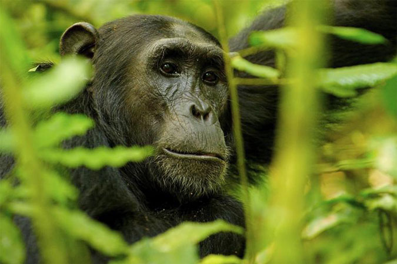

Five (5) Days Chimp and Gorilla Trekking Uganda Safari
These 5 days trip will be an amazing visit to both Kibale and Bwindi national parks.
Well as Kibale National Park is known as the primate capital because of the huge number of chimpanzees and other
primate species, Bwindi NP is one of the most popular gorilla trekking destinations sheltering more than half the
World’s surviving population of mountain gorillas with more than 40 families, 20 of which are habituated for trekking.

Trip Summary
Day 1: Arrival at Kibale National Park
Day 2: Chimpanzee Trek - Kibaale NP
Day 3: Transfer to Bwindi impenetrable forest.
Day 4: Gorilla Tracking
Day 5: Departure

Day 1: Arrival at Kibale National Park
Hopefully, your flight is scheduled for an early morning landing in Uganda. Our tour driver shall pick you from
Kampala or Entebbe and depart for Kibale National park. This is a 5 – 6 hours journey. You will stop over in For
t Portal town for your lunch. Thereafter you shall continue for a craters lake tour en-route to Kibale National
Park. Enjoy the breathtaking landscape of rolling hills and crater lakes. You will take a hike to a great view p
oint overlooking crater lakes.
You will arrive at your lodge for dinner and overnight.
Accommodation option:
Budget: Chimpanzee Forest Guesthouse, Kibale Forest Camp
Midrange: Turaco Treetops
Luxury: Papaya Lake Lodge, Primates Lodge Kibale, Kyaninga Lodge
Day 2: Chimpanzee tracking and Bigodi wetlands walk
Morning: You shall have early breakfast and transfer to the park office by 7am. You will meet the park guides fo
r quick briefing and set out for the chimpanzee tracking adventure in Kibale national park. You will be tracking
one of the several chimpanzee groups in the Kanyanchu chimpanzee community that is full habituated. It may take
1 hour or 2 to find the chimpanzees which can be heard screaming from a distance. You will spend a maximum of
1 hour with the chimps and then return to the lodge for lunch.
Afternoon: After lunch you will go for a walk in the Bigodi wetlands. The Bigodi wetlands are situated on the edge
of Kibale National Park. The wetlands harbor up to 8 species of primates and several other wildlife. After a wonder
ful nature experience in Bigodi wetlands you shall continue and visit the local communities near the wetlands and
learn about their cultures and traditions. You will then return to your lodge for dinner and overnight.
Day 3: Transfer to Bwindi impenetrable forest.
After breakfast, you will head for Bwindi National Park where you are to experience the remarkable gorilla trekk
ing activity. You will drive through Ishaha sector of Queen Elizabeth national park famous for tree climbing lion
s. You will have lunch along the way, and then on arrival at Bwindi, check-in at your reserved lodge for you’re
an overnight stay.
Accommodation options:
Budget: Broadbill camp, Trekkers Tervan Cottages, Rushaga Haven Lodge
Mid-range: Ichumbi Gorilla lodge or Gorilla Mist Camp or Buhoma haven lodge
Luxury: Chameleon Hill lodge or Ruhija Gorilla Safari Lodge or Clouds Mountain Gorilla Lodge or Bwindi lodge
Day 4: Gorilla Tracking in Bwindi Forest
After your breakfast with packed lunch and drinking water proceed to the briefing point in time from which you w
ill embark on your tracking experience. Make sure you are greatly ready for the trek. You will spend 1 hour with
the gorillas after having trekked for 2-8 hours. After the tracking activity return to your lodge for freshening
up, dinner, and overnight stay.
Day 5: Departure to Kampala
You will have breakfast and then depart from Bwindi impenetrable forest with lunch en-route and a brief stop at the equator monument. You will then transfer to lodge or to the airport for your flight back home.
End of Tour

Safari Booking Quotation
Inclusions
Park fees
All activities
All meals
Accommodation
A professional driver/guide
All transportation
Chimp/Gorilla permit
All Taxes/VAT
Drinking water and fruits
Exclusion
International flights
Additional accommodation before and at the end of the tour
Tips and Visa
Personal items
Government imposed increase of taxes and/or park fees
Book Now